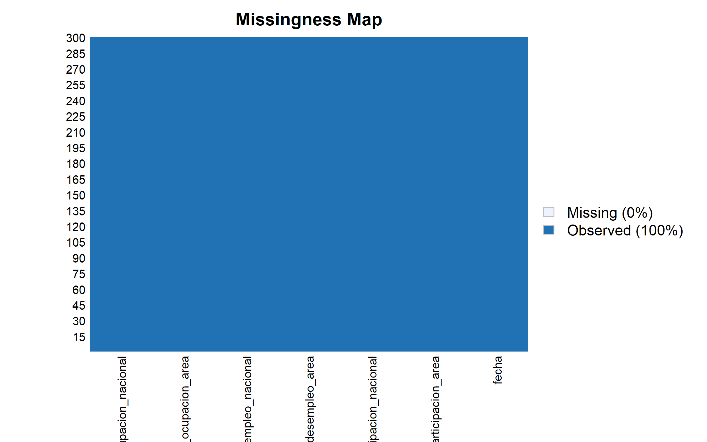

Bookdown R Visualizacion de datos
2026-02-27
Chapter 1 Introduccion
1.1 Introducción
El mercado laboral constituye uno de los principales indicadores del desempeño económico de un país, ya que refleja la capacidad de la economía para generar empleo y absorber la fuerza de trabajo disponible. En Colombia, el seguimiento continuo de indicadores laborales permite analizar la dinámica entre la población económicamente activa, los niveles de ocupación y el desempleo, proporcionando información clave para la formulación de políticas públicas y la toma de decisiones económicas.
El presente proyecto tiene como objetivo analizar el comportamiento del mercado laboral colombiano a partir de los indicadores mensuales publicados por el Banco de la República y producidos por el Departamento Administrativo Nacional de Estadística (DANE), correspondientes al período comprendido entre enero de 2001 y diciembre de 2025. Dichos indicadores se expresan en términos porcentuales y presentan una periodicidad mensual, lo que permite estudiar la evolución temporal del mercado laboral con un alto nivel de detalle.
El conjunto de datos empleado incluye variables fundamentales como la tasa global de participación, la tasa de ocupación y la tasa de desempleo, tanto para el total nacional como para el agregado de las trece principales áreas metropolitanas del país. La tasa global de participación mide la proporción de la población en edad de trabajar que forma parte de la fuerza laboral, reflejando la presión ejercida sobre el mercado de trabajo. Por su parte, la tasa de ocupación representa la relación entre la población ocupada y la población en edad de trabajar, mientras que la tasa de desempleo cuantifica el porcentaje de personas desocupadas dentro de la fuerza laboral total.
Dentro de este conjunto de indicadores, se selecciona como variable objetivo la tasa de desempleo total nacional, debido a que este indicador sintetiza el estado general del mercado laboral y representa el resultado del equilibrio entre la oferta y la demanda de trabajo en la economía colombiana.
A partir de esta variable, se busca responder la siguiente pregunta de investigación:
¿Cómo ha evolucionado la tasa de desempleo en Colombia a lo largo del tiempo y qué relación presenta con otros indicadores del mercado laboral como la tasa de ocupación y la tasa global de participación?
1.2 EDA
- Carga de datos:
library(readxl)
MLC <- read_excel("C:/Users/boolean/Downloads/MLC.xlsx",
sheet = "Series de datos", col_types = c("date",
"numeric", "numeric", "numeric",
"numeric", "numeric", "numeric"))
head(MLC)## # A tibble: 6 × 7
## fecha tasa_global_participacion_area tasa_global_participaci…¹ tasa_desempleo_area tasa_desempleo_nacio…² tasa_ocupacion_area
## <dttm> <dbl> <dbl> <dbl> <dbl> <dbl>
## 1 2001-01-31 00:00:00 70.0 69.1 20.7 16.6 55.5
## 2 2001-02-28 00:00:00 70.2 68.9 19.6 17.4 56.5
## 3 2001-03-31 00:00:00 69.1 68.4 19.1 15.8 55.9
## 4 2001-04-30 00:00:00 67.7 65.2 17.6 14.5 55.8
## 5 2001-05-31 00:00:00 68.1 65.4 17.8 14.0 56.0
## 6 2001-06-30 00:00:00 68.7 66.3 18.7 15.3 55.9
## # ℹ abbreviated names: ¹tasa_global_participacion_nacional, ²tasa_desempleo_nacional
## # ℹ 1 more variable: tasa_ocupacion_nacional <dbl>Se realiza una inspección inicial de los datos del dataset:
## [1] "fecha" "tasa_global_participacion_area" "tasa_global_participacion_nacional"
## [4] "tasa_desempleo_area" "tasa_desempleo_nacional" "tasa_ocupacion_area"
## [7] "tasa_ocupacion_nacional"## tibble [300 × 7] (S3: tbl_df/tbl/data.frame)
## $ fecha : POSIXct[1:300], format: "2001-01-31" "2001-02-28" "2001-03-31" "2001-04-30" ...
## $ tasa_global_participacion_area : num [1:300] 70 70.2 69.1 67.7 68.1 ...
## $ tasa_global_participacion_nacional: num [1:300] 69.1 68.9 68.4 65.2 65.4 ...
## $ tasa_desempleo_area : num [1:300] 20.7 19.6 19.1 17.6 17.8 ...
## $ tasa_desempleo_nacional : num [1:300] 16.6 17.4 15.8 14.5 14 ...
## $ tasa_ocupacion_area : num [1:300] 55.5 56.5 55.9 55.8 56 ...
## $ tasa_ocupacion_nacional : num [1:300] 57.6 56.9 57.6 55.8 56.2 ...## [1] 300 7## fecha tasa_global_participacion_area tasa_global_participacion_nacional tasa_desempleo_area tasa_desempleo_nacional
## Min. :2001-01-31 00:00:00 Min. :55.09 Min. :53.45 Min. : 7.27 Min. : 7.020
## 1st Qu.:2007-04-22 12:00:00 1st Qu.:66.57 1st Qu.:64.09 1st Qu.:10.45 1st Qu.: 9.735
## Median :2013-07-15 12:00:00 Median :67.95 Median :66.14 Median :11.73 Median :11.193
## Mean :2013-07-15 18:38:24 Mean :67.76 Mean :65.74 Mean :12.63 Mean :11.612
## 3rd Qu.:2019-10-07 18:00:00 3rd Qu.:69.47 3rd Qu.:67.48 3rd Qu.:14.02 3rd Qu.:12.909
## Max. :2025-12-31 00:00:00 Max. :72.15 Max. :70.62 Max. :25.79 Max. :21.972
## tasa_ocupacion_area tasa_ocupacion_nacional
## Min. :41.66 Min. :42.50
## 1st Qu.:57.71 1st Qu.:56.84
## Median :59.59 Median :58.31
## Mean :59.22 Mean :58.12
## 3rd Qu.:61.13 3rd Qu.:59.96
## Max. :64.61 Max. :64.01Verificamos que no hayan datos faltantes ni casillas vacias:
## fecha tasa_global_participacion_area tasa_global_participacion_nacional tasa_desempleo_area
## 0 0 0 0
## tasa_desempleo_nacional tasa_ocupacion_area tasa_ocupacion_nacional
## 0 0 0En efecto, no encontramos ningún NA. Esto nos facilita el trabajar con los datos que la limpieza no debe ser tan rigurosa. Otra forma de verlo sería:
## Warning: Unknown or uninitialised column: `arguments`.
## Unknown or uninitialised column: `arguments`.## Warning: Unknown or uninitialised column: `imputations`.